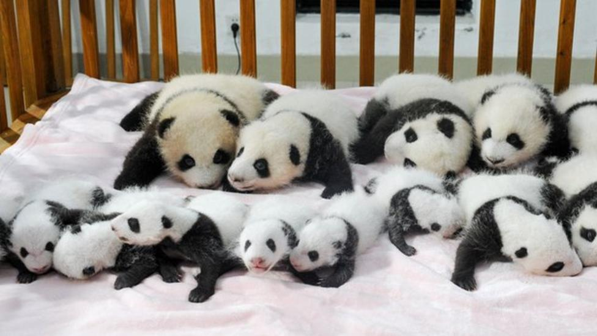

Giant Panda
The giant panda also known as Mr. Panda Bear or simply panda, is a bear native to South central China.
It is easily by the large, distinctive black patches around its eyes, over the ears, and across its round body.
Giant panda at the Ocean Park Hong Kong:
The name "giant panda" is sometimes used to distinguish it from the red panda. Though it belongs to the order Carnivora, the giant panda is a folivore, with bamboo shoots and leaves making up more than 99% of its diet.
Giant pandas in the wild will occasionally eat other grasses, wild tubers, or even meat in the form of birds, rodents, or carrion.
Panda cubs:
In captivity, they may receive honey, eggs, fish, yams, shrub leaves, oranges, or bananas along with specially prepared food.
Population
The giant panda is a conservation-reliant vulnerable species. A 2007 report showed 239 pandas living in captivity inside China and another 27 outside the country. As of December 2014, 49 giant pandas lived in captivity outside China, living in 18 zoos in 13 different countries.
Wild population estimates vary; one estimate shows that there are about 1,590 individuals living in the wild, while a 2006 study via DNA analysis estimated that this figure could be as high as 2,000 to 3,000. Some reports also show that the number of giant pandas in the wild is on the rise.
In March 2015, conservation news site Mongabay stated that the wild giant panda population had increased by 268, or 16.8%, to 1,864. In 2016, the IUCN reclassified the species from "endangered" to "vulnerable".
Cultural significance
While the dragon has often served as China's national symbol, internationally the giant panda has often filled this role. As such, it is becoming widely used within China in international contexts, for example, appearing since 1982 on gold panda bullion coins and as one of the five Fuwa mascots of the Beijing Olympics.
| Year | Wild | Change | Captivity | Change | Total | Change |
|---|---|---|---|---|---|---|
| 1976 | 1,000 | n/a | n/a | n/a | n/a | n/a |
| 1985 | 800–1,200 | n/a | n/a | n/a | n/a | n/a |
| 1987 | >1,000 | n/a | n/a | n/a | n/a | n/a |
| 1994 | 1,200 | n/a | n/a | n/a | n/a | n/a |
| 1995 | 1,000 | −200 | n/a | n/a | n/a | n/a |
| 2003 | 1,596 | +596 | 164[119] | n/a | 1,760 | n/a |
| 2012 | n/a | n/a | 341[120] | +178 | n/a | n/a |
| 2013 | 1,864[121] | +268 | 375[119][122] | +34[122] | 2,239 | +479 |
Biofuel
Biofuel Microbes in panda waste are being investigated for their use in creating biofuels from bamboo and other plant materials.